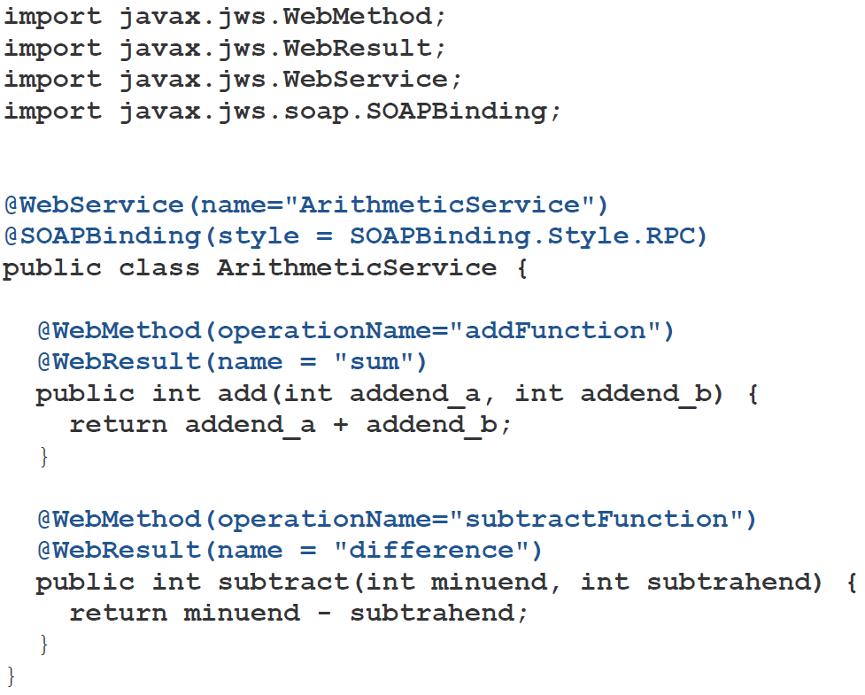

Web и DHTML
Веб-сервисы
Леонид Волканин
ИМКН УрФУ

Какой язык программирования самый правильный?
Let the holy war begin!
Написано? Успешно работает? Не трогай!
Зачем нужно взаимодействие приложений написанных на разных платформах?
Все программисты банка всегда писали на JAVA, у банка есть сервис, который уже 10 лет прекрасно работает. Есть даже сайт с апплетом
А теперь надо универсальное приложение для Windows 10 (Metro / Modern UI). Как организовать общение платформ?
Есть соединение между двумя приложениями. Читаем/пишем байты
Приложения договариваются, что «1» значит «вышли список всех клиентов», «2|36782» — «вышли список транзакций клиента 36782»
Расцвет Мезозойской Эры! Изобретаем новый велосипед для каждого взаимодействия приложений
Контекст: распределённые информационные системы (работают на нескольких компьютерах, общаются по сети)
Неоднородность — основное препятствие для бесшовной коммуникации распределенных информационных систем
Несовпадение в операционных системах, языках, платформах и др.
Сервис-ориентированное программирование — это парадигма (стиль написания программ)
Сервисы — функции, которые предприятие предлагает бизнес-партнерам
Возможная реализация — веб-сервисы
Для предоставления сервисов могут также использоваться ebXML, документ-ориентированные подходы (сообщения EDI) и пр.
Пожалуй самый старый подход — данные в виде XML передаются посредством RPC
Возник с появлением XML, который стали использовать как формат для передаваемых параметров удалённых функций
HTTP часто вообще ни при чём, хотя может быть транспортом
RPC как правило требует постоянного соединения между клиентом и сервером
Стандарт — xmlrpc.scripting.com
<?xml version="1.0"?><methodCall><methodName>examples.getStateName</methodName><params><param> <value><i4>40</i4></value> </param></params></methodCall>
<?xml version="1.0"?><methodResponse><params><param> <value><string>South Dakota</string></value> </param></params></methodResponse>
+ Просто использовать и разрабатывать (портировать)
+ Простой XML
+ Легче SOAP
- Нет машинно-читаемого описания сервиса (WSDL)
- Плохо с интернационализацией (i18n)
- Только один способ сериализации
Изначально — развитие XML RPC. Стандарт — www.w3.org/TR/soap
Тот же XML, но с предварительно описанными в XSD типами (прямо в WSDL), сообщениями, binding-ом сообщений на методы, структурированием методов в группы и описанием сервиса
Машинно-читаемое описание — WSDL (Web Services Description Language)
Поиск — UDDI (Universal Description Discovery and Integration)
SOAP ходит по какому-нибудь протоколу — HTTP, SMTP и куча других
XML-пародия на ставшую в своё время черезчур сложной Corba
В Corba у нас IIOP — в вебсервисах SOAP
В Corba есть IDL — в вебсервисах WSDL
Это что же, ради передачи 10 байт мне надо всю эту лабуду писать?
Эти ребята правильно понимают смысл слова «Simple»?
Спокойствие, только спокойствие!
SOAP не для человека, а для программ
Правильно писать SOAP-сервис на JAVA, который будет использоваться из .Net и Flex
from SOAPpy import SOAPProxyfrom datetime import datetimeinput = datetime.now()namespace = "http://web.cbr.ru/"url = "http://www.cbr.ru/DailyInfoWebServ/DailyInfo.asmx"soapaction = "http://web.cbr.ru/GetCursOnDate"proxy = SOAPProxy(url, namespace = namespace, soapaction = soapaction)proxy.GetCursOnDate(On_date = input)

Веб-сервисы на базе SOAP предполагают вызов методов
Рой Филдинг — Architectural Styles and the Design of Network-based Software Architectures
Надо не процедуру вызывать и передавать ей объект, а обращаться к объекту и изменять его состояние
REST – не протокол и не стандарт, а архитектурный стиль, описывает использование методов HTTP для операций (CRUD) и рекомендации по построению URI
| CRUD | SQL | REST |
|---|---|---|
| CREATE | INSERT | POST |
| READ | SELECT | GET |
| UPDATE | UPDATE | PUT |
| DELETE | DELETE | DELETE |
HEAD — получить метаданные, OPTIONS — что можно делать, TRACE — отладка
| URI | метод HTTP | действие |
|---|---|---|
| /books/ | GET | получить все книги |
| /books/3 | GET | данные о книге с id=3 |
| /books/ | POST | добавить книгу |
| /books/4 | PUT | отредактировать книгу с id=4 |
| /books/5 | DELETE | удалить книгу* |
* Иногда — PUT с пометкой удаления
POST /books/ HTTP/1.1Content-Type: application/json{ "title": "RESTful Web Services"; "author": "Leonard Richardson, Sam Ruby"}
HTTP/1.1 201 CreatedLocation: /books/100500
У них чаще побеждает REST, но
REST simplicity = freedom from choice
WS-* complexity = freedom of choice
Open Data Protocol — odata.org, даже в 1С
«Трансляция» SQL на REST
http://services.odata.org/V4/OData/OData.svc/Products ?$filter=Rating+eq+3&$select=Rating,+Name
Что интересно — можно определять и вызывать функции
| SQL | OData |
|---|---|
| select * from products where id = 1 | /Products(1) |
| select * from products where name = "Milk" | /Products?$filter=name eq "Milk" |
| select name from products | /Products?$select=name |
| select * from products order by name | /Products?$orderby=name |
| select * from products offset 10 limit 10 | /Products?$top=10&$skip=10 |
| select * from prices r, products p where r.id = p.id and p.id = 1 | /Products(1)?$expand=Prices |
HTTP транспорт — GET, POST, PUT/PATCH/MERGE, DELETE
GET /V4/OData/OData.svc/Products(1) HTTP/1.1Host: services.odata.org
Фильтры: $search $filter $count $orderby $skip $top $expand $select $format
Логические операции: eq ne gt ge lt le or and
Арифметические операции: add sub mul div mod
Функции: substrof endswith startswith length indexof replace substring tolower toupper trim concat year month day hour minute second round floor ceiling isof cast
| OData | RESTful |
|---|---|
| /Products(1) | /Products/1 |
| /Products?$filter=name eq "Milk" | /Products?name=Milk |
| /Products?$select=name | /Products/1/name |
| /Products?$orderby=name | /Products?$orderby=name |
| /Products?$top=10&$skip=10 | /Products?offset=10&limit=10 |